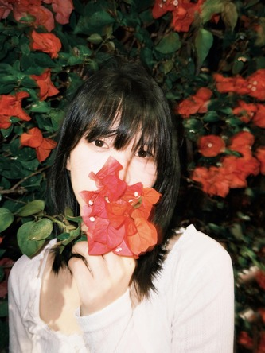
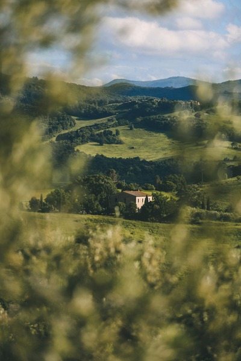
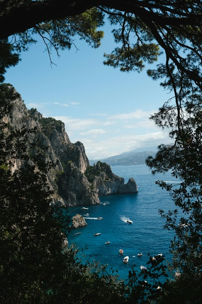
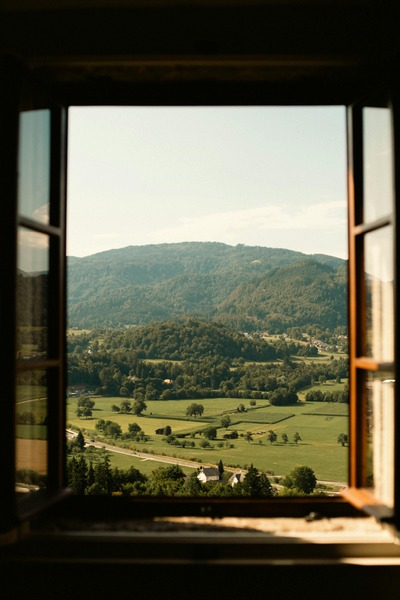
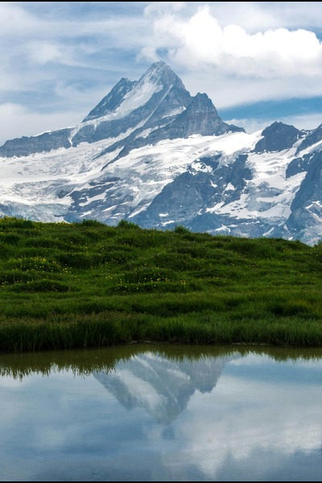

I'm a nature photographer based in Portland, Oregon, where rain-soaked forests and shifting coastal skies shape my lens. I chase the
quiet poetry of the wild — the first light on alpine ridges, the hush of fog in old-growth groves, the fierce grace of waves meeting stone. My work weaves these moments
into fine art prints and editorial stories, inviting you to linger in the landscapes that move us.

My Favorites

📍 Volterra, Tuscany, Italy

📍 Capri, Italy

📍 Slovenia

📍 Grindelwald, BE, Switzerland
In every walk with nature, one receives far more than he seeks.
— Ansel Adams
Want to know where I travel next?
Sign up for my newsletter where I share all about the places I travel to!